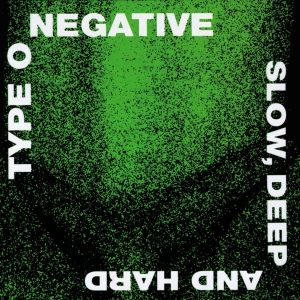
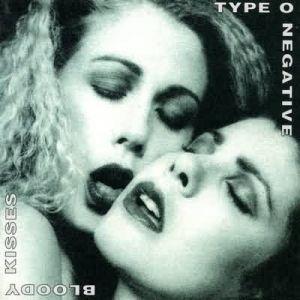
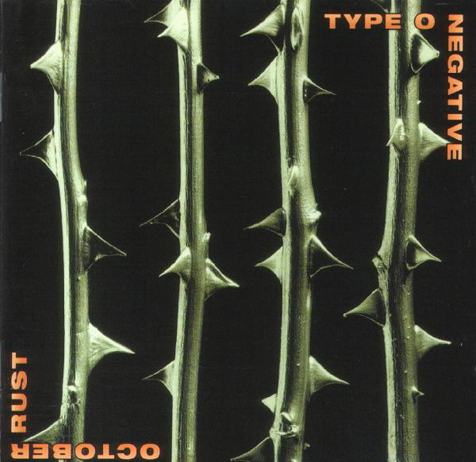
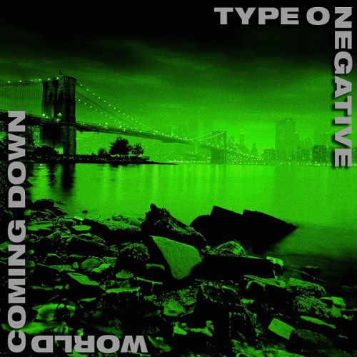
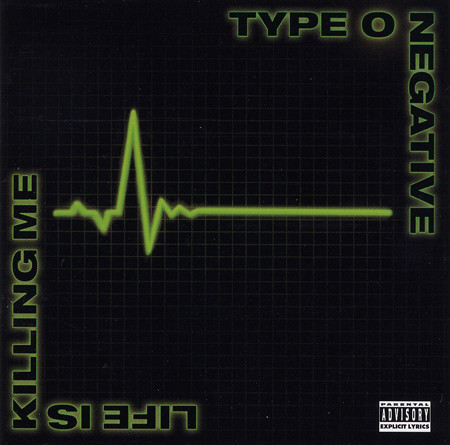
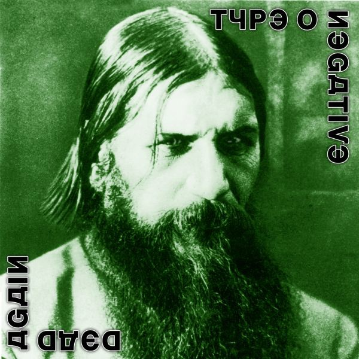

Type O Negative – в прошлом метал-группа из Бруклина, Нью-Йорк. Антураж творчества группы, часто мрачного, но не лишённого чёрного юмора, включал тематики любви, смерти, депрессии; из-за него коллектив заслужил прозвище «The Drab Four» («скучная четвёрка»). Это прозвище пародировало выражение «Великолепная четвёрка» - как называли и называют великих Beatles.
Slow,Deep and Hard (1991)
Дебютный альбом американской метал-группы Type O Negative, выпущенный в 1991 году на лейбле Roadrunner Records. Первоначальным названием релиза было «None More Negative». Дебютник группы стал для неё сразу шагом на «большую сцену», и отличался «сыростью» звучания предыдущей группы фронтмена Питера Стила - команды Carnivore. В своём же первом релизе Type O Negative «задали» стилистику будущих работ, и обзавелись узнаваемыми элементами звучания. С точки зрения жанров, альбом соединял дум-метал, готический рок и индастриал. Альбом Slow, Deep and Hard, по сути, является полу-автобиографическим, и наполнен чёрным юмором, присущим мировоззрению фронтмена группы и творчеству Type O Negative в целом.
Bloody Kisses (1993)
Bloody Kisses – второй студийный альбом американской метал-группы Type O Negative, и последний у неё, записанный с участием ударника Сола Абрускато (Sal Abruscato). Релиз сделал звучание команды ещё более узнаваемым, и включил несколько каверов, стилистически переделанных в сатирической готической манере группы. В альбом вошёл кавер на композицию "Summer Breeze" группы Seals and Crofts. Альбом Bloody Kisses стал первым релизом группы на лейбле Roadrunner Records, достигшим «золотого» и «платинового» статуса. В 2005 году альбом Bloody Kisses попал на 365-ое место в списке 500 Лучших рок- и метал-альбомов всех времён по версии журнала Rock Hard.
October Rust (1996)
October Rust – третий студийный альбом американской метал-группы Type O Negative, выпущенный в 1996 году. Этот альбом стал первым релизом группы с новым ударником Джоном Келли (Johnny Kelly), который вошёл в состав команды на замену ушедшему Солу Абрускато. Однако, в одном из интервью сайту dreadcentral.com в 2007 году клавишник и сопродюсер группы Type O Negative Джош Сильвер (Josh Silver) признался, что партии ударных в альбоме October Rust и двух последующих студийниках (World Coming Down и Life is Killing Me) были созданы на драм-машине. В альбом October Rust вышли больше баллад и меньше панк/метал-звучания, чем во все другие альбомы группы.
World Coming Down (1999)
World Coming Down — четвёртый студийный альбом американской дум/готик-метал группы Type O Negative, выпущенный в 1999 году. Этот альбом не стал, как предыдущий, уходом к более мелодичному и спокойному звучанию, наоборот, он стал гораздо мрачнее и грязнее в звучании.После окончания очередного успешного мирового турне в поддержку October Rust Type O Negative начали запись нового (пятого) студийного альбома. За время, прошедшее с выхода October Rust, Питер Стил пережил несколько смертей близких ему людей. Стил пережил сильную депрессию и на какое-то время ушёл в запой и стал принимать наркотики. Во время прохождения курса по наркотической и алкогольной реабилитации его бросила подруга, с которой он жил пару лет. Питер разбивает лицо мужу этой женщины, и его сажают в Райкерс, тюрьму на Род Айленде, до возвращения в реабилитационный центр. Всё это нашло своё отражение в новом альбоме под названием World Coming Down, выпущенном в 1999 году. По сравнению с довольно светлым как по звучанию, так и по текстам October Rust, на World Coming Down звучание стало более мрачным и депрессивным, звучание стало более «думовым», напоминая первый альбом Slow, Deep & Hard. Тексты песен рассказывают о мрачных настроениях автора: смерть, наркотики, депрессия и самоубийство
Life is Killing Me (2003)
Life is Killing Me - пятый студийный альбом американской метал-группы Type O Negative, который изначально планировалось выпустить под названием The Dream is Dead. Питер Стил, вокалист и бас-гитарист группы, использовал четырёхструнную бас-гитару Fernandes Tremor, созданную компанией эксклюзивно по его спецификациям по спецзаказу. Несмотря на то, что он остался доволен инструментом по части звучания и деталей, Стил говорил, что цвет гитары совершенно не соответствовал тому зелёному оттенку, что он заказывал. В этом альбоме группа вновь использовала драм-машину, как и нескольких предыдущих релизах - October Rust и World Coming Down.
Dead Again (2007)
Dead Again - шестой студийный альбом американской метал-группы Type O Negative, выпущенный в 2007 году на лейбле SPV/Steamhammer. Этот альбом стал последним студийным релизом группы, выпущенным перед смертью фронтмена Питера Стила. Впервые со времени выхода третьего студийника группы - Bloody Kisses, вновь использовались студийные барабаны, а не драм-машина. За дело впервые взялся ударник Джонни Келли, хотя он и раньше указывался в качестве записывающего музыканта на релизах. Буклет к альбому в развёрнутом виде имеет форму креста. Изображение на обложке – знаменитая фотография Григория Распутина, а шрифт надписей копирует кириллицу. Альбом получил позитивные отзывы от фанов и критиков. В феврале 2008 года он был переиздан, включив концертный DVD с выступлениями, интервью и клипами. Кроме того, вышел и бокс-сет с тремя виниловыми LP и коллекционными предметами.